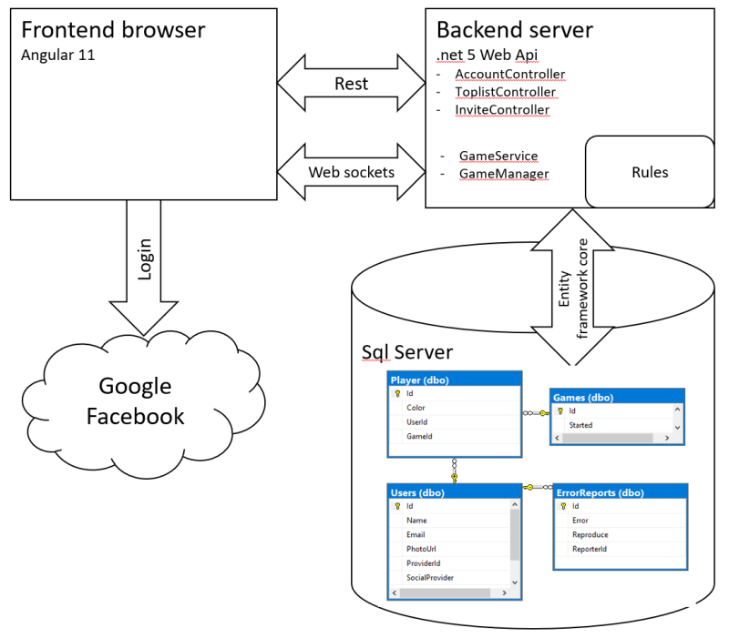
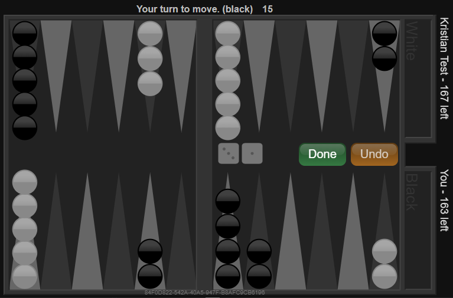

Read about how to develop an online game on Azure.
Or just play the game here: https://backgammon.azurewebsites.net/
During the last month or so, I've spent most of my free time building an online backgammon game.
The main goal was to try to improve my full stack developer skills and perhaps discover a new trick or two.
In this article I share the technologies I use and small things I think can be useful if you plan to start a similar project.
It's by no means a complete guide of my code, but you can find the source open to read on GitHub (2).
Some of the game features
Introduction
Background
The application is hosted on Azure(10) in an App Service and the data is stored in Sql Server. You authenticate via Facebook or Google Oauth 2.0. The Backend is written in C# .net 5. (latest dotnet core). For Sql Server database integration I use Entity Framework core with code first migrations.
The communication between frontend and backend is done with websockets during game play and a rest api for everything else.
For frontend I use Angular 11 and the game board is drawn on a html canvas element.

The rules(3) of Backgammon might look quite simple at first: Roll the dice and move checkers the number you get on the dice towards your home. If an opponent has two or more checkers on a point that point is blocked. If the opponent has only one checker on a point you can hit it and that checker is moved to the bar, forcing it to start from point zero. But there are a few complex situations also, for example that you always have to use both dice if you can. If the move of a checker prevents using the other dice you can't move that checker.
Read more about Backgammon rules here. For these reasons I decided to develop the rules of the game using Test Driven Development (TDD) and keep them in a separate dll. TDD is my choice of method when calculations get complicated and you don't want to spend hours and days tracking down ugly bugs.
I also realized early that the game state had to be kept on the server and that the client should have as little game rules as possible. The game rules are developed in C# and is a part of the backend. One main priority was also to keep network traffic low, in case many users start playing at the same time. Larger servers cost more money on Azure.
Since the roll of dice are random the Rules.Game class also has a FakeRoll function for testing, which of course isn't accessible from the client. Below are a few examples of test cases of the Rules.Game class.
[TestMethod]
public void TestMoveGeneration()
{
game.FakeRoll(1, 2);
var moves = game.GenerateMoves();
Assert.AreEqual(7, moves.Count);
}
[TestMethod]
public void TestCheckerOnTheBarBlocked()
{
game.AddCheckers(2, Player.Color.Black, 0);
game.FakeRoll(6, 6);
var moves = game.GenerateMoves();
Assert.AreEqual(0, moves.Count);
}
The client accesses the server through a web api. Since the api is served with an App Service, which is basically a web server, I wanted to use the same App Service to serve the Angular client in production. Then you will have one less App Service to worry about. The alternative could have been to use for example nginx on a Ubuntu machine.
This is the configuration needed to make it work.
public void Configure(IApplicationBuilder app, IWebHostEnvironment env, ILogger<GameManager> logger, IHostApplicationLifetime applicationLifetime)
{
app.UseHttpsRedirection();
app.UseRouting();
app.UseEndpoints(endpoints =>
{
endpoints.MapControllers();
});
app.UseWebSockets();
app.UseDefaultFiles();
app.Use(async (context, next) =>
{
if (context.Request.Path == "/ws/game")
{
if (context.WebSockets.IsWebSocketRequest)
{
logger.LogInformation($"New web socket request.");
// Handle web socket stuff. See example below.
}
else
{
context.Response.StatusCode = 400;
}
}
else
{
await next();
// This enables angular routing to function on the same app as the web socket.
// If there's no available file and the request doesn't contain an extension, we're probably trying to access a page.
// Rewrite request to use app root
if (SinglePageAppRequestCheck(context))
{
context.Request.Path = "/index.html";
await next();
}
}
});
app.UseEndpoints(endpoints =>
{
endpoints.MapControllers();
});
// Required for Angular app i wwwroot
app.UseStaticFiles();
}
Web sockets is a technology I hadn't worked with before, but I was very curious about it. I am familiar with regular sockets on windows so I understood that the communication is actually simpler than the regular request response pattern. The difference with web sockets and a http request is that sockets are always open. Either the client or the server can send data at any time.
There are good libraries for both Angular and .net 5, and they are fully compatible. The only thing that might feel strange is that when the function on the .net server side accepts the socket returns the connection is closed. So you have to read the socket in a loop until you decide to close communications. The socket is also wrapped in a http request, which isn't returned until socket closure.
Below is my Startup configure function, littlebit simplified.
if (context.Request.Path == "/ws/game")
{
if (context.WebSockets.IsWebSocketRequest)
{
var socket = await context.WebSockets.AcceptWebSocketAsync();
try
{
while (socket.State != WebSocketState.Closed &&
socket.State != WebSocketState.Aborted &&
socket.State != WebSocketState.CloseReceived)
{
var buffer = new byte[512];
var sb = new StringBuilder();
WebSocketReceiveResult result = null;
// reading everyting on the socket
while (result == null || (!result.EndOfMessage && !result.CloseStatus.HasValue))
{
result = await socket.ReceiveAsync(new ArraySegment<byte>(buffer), CancellationToken.None);
var text = Encoding.UTF8.GetString(buffer.Take(result.Count).ToArray());
sb.Append(text);
}
// Do something with the data here.
}
logger.LogInformation("Socket is closed");
}
catch (Exception exc)
{
logger.LogError(exc.ToString());
}
}
else
{
context.Response.StatusCode = 400;
}
}
It is not important for the backend to know who the players are. What matters is to identify if the user has been here before to keep a score when different players compete. For these requirements I think the perfect choice is to use an external social provider for authentication. I've enabled facebook and google provider.
I see no reason for a user to log in everytime he (or she) browses to the app, so the login UserDto is stored in the browser's local storage. These are steps occurring during login.
1. A user clicks the google or facebook login button.
2. signIn as called on Angular package angularx-social-login(6).
3. The signin modal is opened.
4. A SocialUser object is returned including an OpenId jwt.
5. The jwt is sent securely to the backend where it is validated.
6. If valid, a user is created, if not already created.
7. The user's unique user Id is sent back to the client and store in local storage. The user is now logged in and can play other users.
Drawing is the most fun part of the application I think. I find canvas drawing(7) to be quite easy if you are used to thinking in x-y-coordinates. The main benefit is that you can make the board 100% responsive, so it will fit nice on any screen size. That is if you calculate all coordinates in relation to height and width of the screen.
This is how you get the drawing context and draw a filled circle on it.
// typescript
@ViewChild('canvas') public canvas: ElementRef | undefined;
ngAfterViewInit(): void {
const canvasEl: HTMLCanvasElement = this.canvas.nativeElement;
const cx = canvasEl.getContext('2d');
cx.beginPath();
cx.ellipse(x, y, width, width, 0, 0, 2 * Math.PI);
cx.closePath();
cx.fill();
}
One thing I learned is to use the built in function: requestAnimationFrame.
It is called every time something changes on the board and then it's up to the browser if it feels it has time to draw a frame. I find that the cpu impact is quite low using this method.
requestAnimationFrame(this.draw.bind(this));

I'm so happy to see how Entity Framework(9) has evolved during the last years. Nowadays it is very easy to write some C# classes, make sure every class has a primary key and then let Entity Framework generate everything for you. I was surprised that EF core 5.0 is so good to realize many to many relations for example. I also like that properties named "Id" with datatype int automatically get defined as an auto incrementing identity.
Error messages were always clear and descriptive to me so this part of the development was what I spent the least time with.
And everytime I need to make a database update I just add some data class, property or whatever and then call:
Add-Migration a-name-I-choose (Inspect the changes in the generated migration files) Update-Database (done)
In all client server applications, it is important to give extra time and thought on the parts that makes the integration possible. The client and server are essentially two different programs, which very often have different pace of development. To minimize the risk of changing things on one side that will break the integration you use data transfer objects, (dto). Their purpose is to define the data transferred between the client and server. Since they are written in different languages I use a package called MTT by Cody Schrank. It is set it up in the .csproj file like this:
<Target Name="Convert" BeforeTargets="PrepareForBuild">
<ConvertMain WorkingDirectory="Dto/" ConvertDirectory="tsdto/" />
</Target>
MTT takes the C# dtos and converts them at compile time to typescript interfaces which are then used as definition for either sent or received data in both client and server. Unfortunately MTT can only save its files below the project directory, so I also have to copy them to the client file source tree.
Example of conversion:
namespace Backend.Dto
{
public class CheckerDto
{
public PlayerColor color { get; set; }
}
}
// gets converted to typescript
import { PlayerColor } from "./playerColor";
export interface CheckerDto {
color: PlayerColor;
}
If you find this article interesting, but have an opinion on what technologies you would have chosen, also let me know in the comments.
If you find a bug in the game, please also let me know.
The code is open for anyone to read, so if you want to make pull request and help out with improvements you are also welcome.
I also want to thank Shane, Patrik and Linn for helping me with testing.
1. The game
https://backgammon.azurewebsites.net/
2. The code
https://github.com/KristianEkman/Backgammon
3. Backgammon rules
https://bkgm.com/rules.html
4. WebSockets support in ASP.NET Core
https://docs.microsoft.com/en-us/aspnet/core/fundamentals/websockets?view=aspnetcore-5.0
5. Angular Websockets Tutorial
https://tutorialedge.net/typescript/angular/angular-websockets-tutorial/
6. angularx-social-login
https://www.npmjs.com/package/angularx-social-login
7. HTML Canvas Tutorial
https://www.w3schools.com/graphics/canvas_intro.asp
8. C# DTOs to Typescript Interfaces
https://github.com/CodySchrank/MTT
9. Entityframework core
https://entityframeworkcore.com/approach-code-first
10. Azure
https://azure.microsoft.com/
24th March 2021
Version 1.0